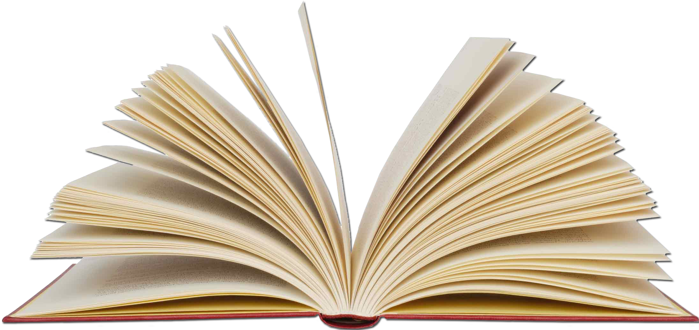

El fondo del proyecto tiene un degradado verde que transmite tranquilidad y además pega bastante bien con la cabecera, que al ser azul le da un toque alegre y divertido, los iconos usados son todos estilo dibujo, para ilustrar los botones de direcciones del inicio y representar el tema que se quiere tratar, tenemos así un pc para ver las características, una hoja con opciones marcadas para la encuesta, y una pila de libros para ilustrar esta información. La tipografía usada es Arial en toda la web ya que es una fuente sans bastante legible.